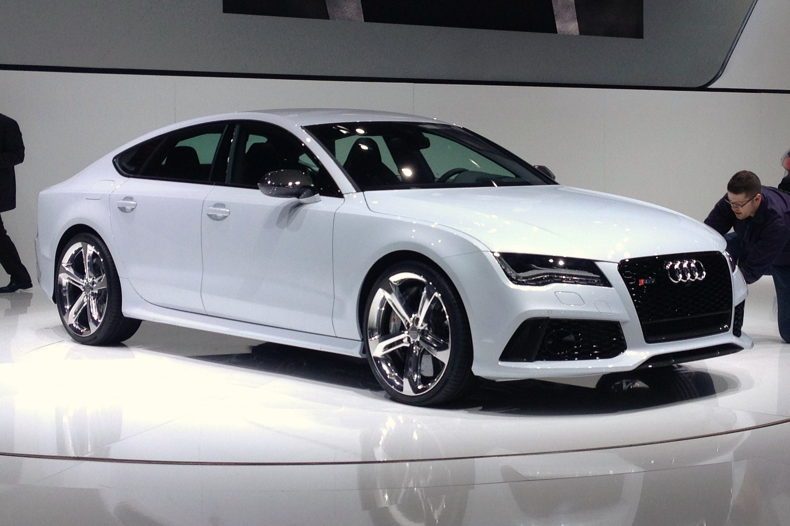
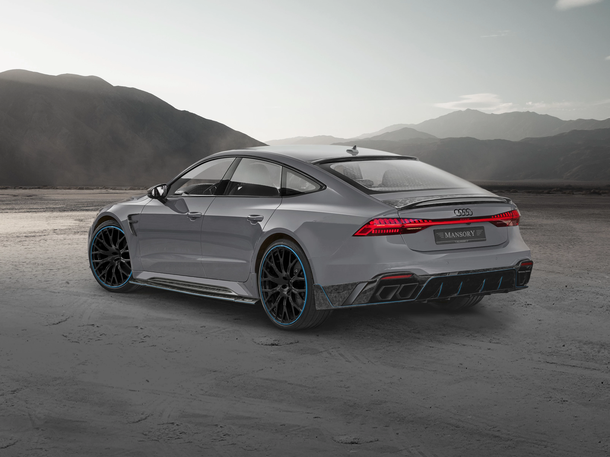

Audi




1909–1931: Gründung der Audi Automobilwerke GmbH
Die Unternehmensgeschichte begann, nachdem August Horch aus dem von ihm gegründeten Unternehmen „August Horch & Cie Motorwagenwerke Zwickau“ aufgrund von „Spannungen zwischen kaufmännischer und technischer Leitung des Werkes“ ausgeschieden war und am 16. Juli 1909 zusammen mit Zwickauer Unternehmern die „August Horch Automobilwerke GmbH Zwickau“ gründete. Weil ihm sein ehemaliges Unternehmen untersagte, den Namen Horch für die neue Automobilfabrik weiter zu verwenden, wurde sie am 25. April 1910 in „Audi Automobilwerke GmbH Zwickau“ umbenannt.[5][6] Das Wort „Horch“ ist der Imperativ des Verbs „hören“, und die lateinische Übersetzung von „Höre! (Horch!)“ ist Audi.
Im Juli 1910 verließ das erste Fahrzeug der Marke Audi das Zwickauer Werk, das 1915 in eine Aktiengesellschaft, die „Audiwerke AG Zwickau“, übergeleitet wurde. Während der Weltwirtschaftskrise geriet Audi 1928 in finanzielle Schwierigkeiten. Im gleichen Jahr übernahmen die Zschopauer Motorenwerke J. S. Rasmussen AG (DKW) mit Krediten der Sächsischen Staatsbank die Aktienmehrheit der Audiwerke.
1932–1945: Audi und die Auto Union AG, Chemnitz
m Juni 1932 wurden die Zschopauer Motorenwerke (DKW) mit ihrer Zwickauer Tochtergesellschaft Audi, die Horchwerke AG (ebenfalls Zwickau) und das Automobilwerk Siegmar der Wanderer-Werke in Schönau bei Chemnitz zur Auto Union zusammengeschlossen. Das Firmenzeichen mit den verschlungenen Ringen symbolisierte den Zusammenschluss der vier Marken, die jedoch eigenständig blieben. Nach dem Eintrag des neuen Konzerns ins Handelsregister der Stadt Chemnitz wurden Audi und Horch als Unternehmen liquidiert und die Fabriken als Auto Union AG, Werk Horch bzw. Auto Union AG, Werk Audi weitergeführt. Als Hauptsitz der Auto Union war mit der Gründung Chemnitz festgelegt worden. Nur unter dieser Bedingung hatte sich die Stadt Chemnitz mit einem Aktienkapital von 750.000 RM an der Gesellschaft beteiligt.[7] Trotz Mahnungen blieb die Hauptverwaltung bis 1936 noch in Zschopau im DKW-Werk. Erst 1936 wurde sie nach Chemnitz in das ehemalige Verwaltungsgebäude der Presto-Werke verlegt.[8] Durch die Auswirkungen der Weltwirtschaftskrise waren tiefgreifende Rationalisierungsmaßnahmen in allen Auto-Union-Werken notwendig. Was anfangs mit der Übernahme durch die Zschopauer Motorenwerke (DKW) begann, wurde nun unter der Führung des Hauptanteilseigners, der Sächsischen Staatsbank, fortgesetzt.
Die Horch-Pkw vereinigten Prestige und Tradition und hatten im Deutschen Reich der 1930er-Jahre mit mehr als 50 % den höchsten Marktanteil in der Luxusklasse.[9] Im Werk Horch wurden neben den eigenen Oberklassefahrzeugen auch die Mittelklasse-Pkw der Marke Audi gebaut, während das Werk Audi fürs Volumensegment die DKW „Frontwagen“ herstellte. Von den Audi-Pkw wurden die geringsten Stückzahlen abgesetzt – Anteil der Auto-Union-Marken an der Pkw-Gesamtproduktion im Deutschen Reich im Jahr 1938: DKW 17,9 %, Wanderer 4,4 %, Horch 1,0 %, Audi 0,1 %.
2020er: Umstellung auf Elektromobilität
Seit Beginn der 2020er-Jahre betreibt Audi die Umstellung seiner Produktpalette auf Elektromobilität und konzentriert sich bei der Produktentwicklung auf elektrifizierte Modelle. Bis ca. 2026 sollen 20 Elektromodelle angeboten werden. Ende 2021 hat Audi in Nürnberg ein erster Lade-Hub für Elektroautos eröffnet. Als nächste Standorte sollen Zürich, Salzburg und Berlin folgen. Ziel sei 200 bis 300 solcher Stationen in Europa zu bauen.[18]
Anfang 2021 wurde bekannt, dass die Bentley Motors Ltd. aus der Markengruppe Sport, in die Markengruppe Premium mit Verantwortung der Audi AG wechselt. Neben Bentley sind hier Automobili Lamborghini S.p.A., Ducati Motor Holding S.p.A. und Italdesign Giugiaro S.p.A eingegliedert.
Mitte März 2021 ließ Vorstandsvorsitzender Markus Duesmann verlautbaren, dass das Unternehmen die Entwicklung von Benzin- und Dieselantrieben einer weiteren Generation stoppe. Die EU-Pläne für eine noch strengere Abgasnorm Euro 7 verursachten technisch erhebliche Schwierigkeiten bei gleichzeitig geringem Nutzen für die Umwelt. Das schränke den Verbrennungsmotor extrem ein. Man werde daher keinen neuen Verbrennungsmotor mehr entwickeln, sondern die bestehenden Verbrennungsmotoren an neue Emissionsrichtlinien anpassen.[19]
Audi-Sport-Fähnchen und Audi-S-Emblem
Mit dem Audi S4 (C4) im Jahr 1991 führte Audi in Anlehnung an die Motorsporterfolge aus den 1980er-Jahren eine Kennzeichnung besonders sportlicher Serienfahrzeuge mit einem Fähnchen auf dem Heck und im Kühlergrill ein.
Es setzte sich aus drei nebeneinander stehenden, nach rechts geneigten Balken zusammen, wobei der deutlich breitere und rot eingefärbte erste Teil mit den Audi-Ringen versehen war. Die beiden hinteren Elemente enthielten die Modellkennzeichnung, die sich aus einem oder zwei Buchstaben und einer Zahl zusammensetzte. Bei einigen Sondermodellen wie dem Audi RS2 und dem Audi S6 Plus wurde der zweite Teil des Fähnchens blau eingefärbt und die Bezeichnung entsprechend angepasst.
Nach dem Jahr 2000 wurde das Fähnchen modifiziert. Nur das rote Element blieb noch erhalten und die Typbezeichnung wurde als Schriftzug ausgeführt. Später wurde diese Vorlage auch für die „S-line“-Symbolik verwendet.